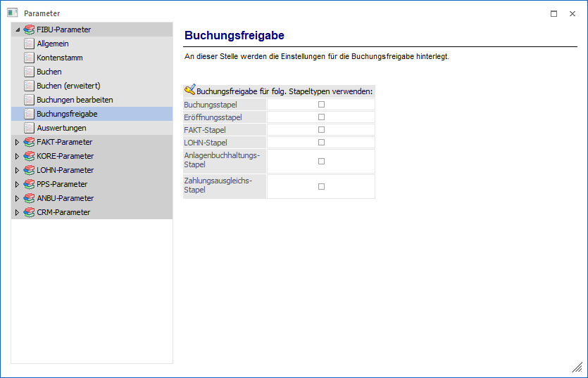
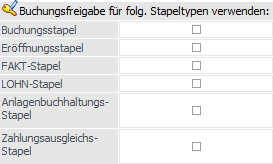

Über den Bereich "FIBU-Parameter - Buchungsfreigabe" können Einstellungen für die Buchungsfreigabe vorgenommen werden.
Hinweis
Standardmäßig wird das Fenster in einem "Lesemodus" geöffnet, d.h. es können die bestehenden Einstellungen kontrolliert, Änderungen allerdings nicht durchgeführt werden. Hierfür muss zunächst mit Hilfe des Buttons "Bearbeiten" der "Bearbeitungsmodus" aktiviert werden. Alternativ kann diese Aktivierung auch über das Kontextmenü der rechten Maustaste (Funktion "Applikation xxx bearbeiten") erfolgen.

Buchungsfreigabe für folgende Stapeltypen verwenden

ü Buchungsstapel
ü Eröffnungsstapel
ü FAKT-Stapel
ü LOHN-Stapel
ü Anlagenbuchhaltungs-Stapel
ü Zahlungsausgleichs-Stapel
Über die Buchungsfreigabe kann für unterschiedliche Stapeltypen definiert werden, ob die einzelnen Buchungen geprüft werden müssen, bevor sie gebucht werden können. Wird ein entsprechender Stapel im Buchungsfenster geladen, wird (ganz links) in einer zusätzlichen Spalte "Freigabe" in der Buchungstabelle mittels Checkbox angezeigt, ob die Buchung bereits geprüft wurde oder noch nicht.
Die Checkbox gibt es nur in den Programmen "Buchen Dialog-Stapel" und "Buchen Dialog-Stapel Quick". Die Prüfung erfolgt aber auch in allen andern Buchungsfenstern, d.h. wenn FAKT-Stapel geprüft werden sollen, müssen diese zuerst im Buchen Dialog-Stapel bearbeitet und gespeichert werden, bevor sie auch im Fenster "FAKT-Stapel-Buchen" gebucht werden können. Andernfalls würde der Stapel dort mit einer Fehlermeldung abgelehnt werden.
Zusätzlich wird im Programm "Buchungen laden" eine Selektionsmöglichkeit der Buchungsfreigabe zur Verfügung gestellt.